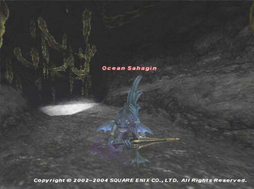
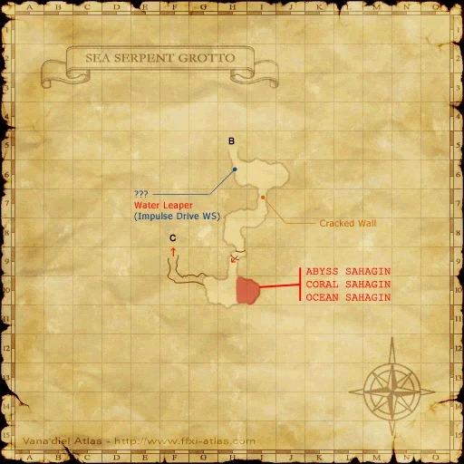

Level 75 reference · Zenith rules
|
Job: Dragoon Notorious Monster |
 Image source |


|
Zone |
Level |
Drops |
Steal |
Spawns |
Notes |
|
75 |
1 |
A, L, T(H) | |||
|
HP = Detects Low HP; M = Detects Magic; Sc = Follows by Scent; T(S) = True-sight; T(H) = True-hearing JA = Detects job abilities; WS = Detects weaponskills; Z(D) = Asleep in Daytime; Z(N) = Asleep at Nighttime | |||||


Image source
Notes:
- Spawns past the door opened with the Sahagin Key, around H-10 approximately every 21-24 hours.
- Killable by: 6 characters level 70. Also killable by level 68, and well prepared NIN/WAR BRD/WHM DRG/RDM.
- This NM is much like an easier version of Zuug the Shoreleaper. If you can defeat Zuug the Shoreleaper, you can defeat this NM.
- Special Attacks: Call Wyvern
Adapted from Eden Wiki: Ocean Sahagin · Contributors and history · CC BY-SA 4.0. Revision 1852. Layout, links and optional background text adapted for Zenith.